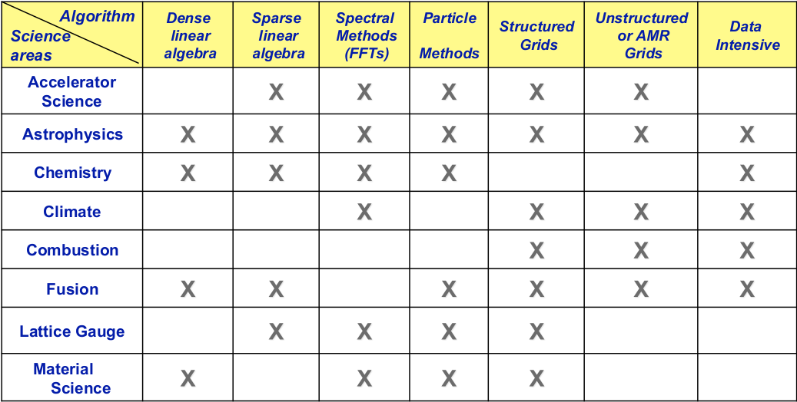
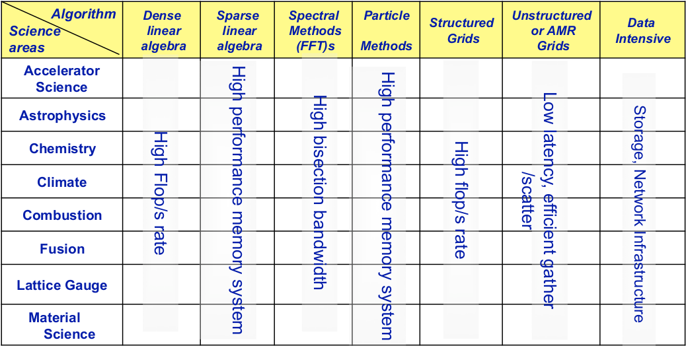

How Science Drives Architecture - NERSC
Many of the algorithms or methods that require High Performance Computing (HPC) will require different types of resources to operate, such as specific libraries, hardware and software.
This section will show some methods used in various scientific fields that need HPC to find a solution and their hardware requirements to work properly. In other words, we will show the scientific nature of some problems and its technological solution [1].
Table I: Some Methods in Science
Here we can see different types of algorithms or methods that can be used in some science fields or some applications of these. With this information it is possible to know the different cases that can be used to solve problems in a scientific field, also knowing the nature of the algorithm, we can know which would be the libraries to use.

This table shows the different methods that can be used to solve specific problems in the listed areas of science.
For example, for problems that arise in Acceleration Science, a research tool that helps reveal the innermost workings of matter [2] , it uses methods such as Sparse linear algebra [4], Spectral and Particle Methods, and Structured and Unstructured Grids.
Astrophysics is the development and study of physics applied to astronomy and the problems that can arise in this area are so varied that their possible solution can cover all the methods of the table, from the amount of operations to be performed to the handling of large volumes of data.
In this table we can see which areas of science face which kind of problems, then we can see which areas like Chemistry face problems whose solution may be among the methods of Dense Linear Algebra [3], Sparse Linear Algebra, Spectral Methods [5], or Particle Methods [6]. The climate area face Spectral Methods, Structured [7] and Unstructured [8] Grids, and Data Intensive [9] problems. The same can be seen with the other areas of science found in the table.
Note
For a better understanding of the problems that each of the listed science areas may face, you can see the references.
Table II: Machine Requirements
In the previous table we can see different methods to solve various types of problems, according to the science area and in the following one we will see what is required (in terms of hardware) to carry out these methods.

Then we can see that for linear Dense algebra and Structured Grids problems, it is necessary to have a high rate of floating point operations per second (Flop/s).
For the resolution of Sparse linear algebra problems, a high performance memory system is required as well as a high bandwidth must be had to solve Spectral Methods (FFT)s problems
Finally, we can see that for Unstructured or AMR (Adaptive mesh refinement) Grids problems, low latency and efficient memory addressing are needed. For Data intensive problems, as the name suggests, a good storage and network infrastructure is needed to handle large amounts of data.